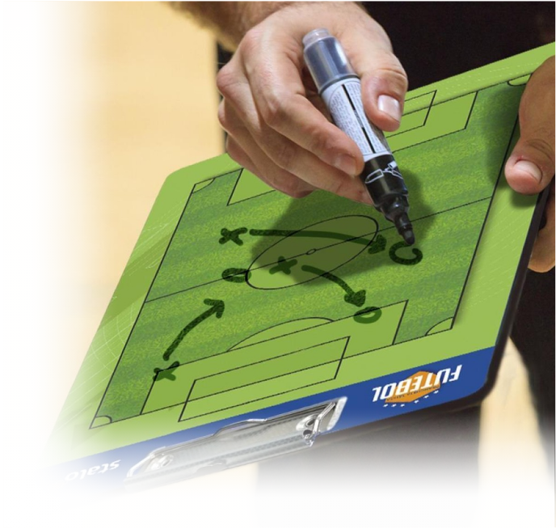
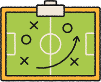

Todos os direitos reservados -
Football Tactics©
Seja bem-vindo ao Football Tactics! Este portal foi criado para quem deseja enxergar o jogo além da bola na rede. Aqui você encontrará análises sobre sistemas táticos, os estilos de jogo dos maiores times do mundo e a evolução dos treinadores que redefiniram a história do esporte

Uma partida de futebol vai muito além de tentar uma vitória. A partida é composta por estrategias de ambas as equipes, onde todo os bastidores por trás dos 11 jogadores estudam as fragilidades do adversário, definem as organização defensivas e ofensivas, cria o modelos de jogo e fazem ajustes em tempo real durante as partidas. Uma grande equipe sempre tem um corpo técnico que transforma talentos individuais em um coletivo organizado e vitorioso.

Clique no botão abaixo para saber mais!
Todos os direitos reservados -
Football Tactics©